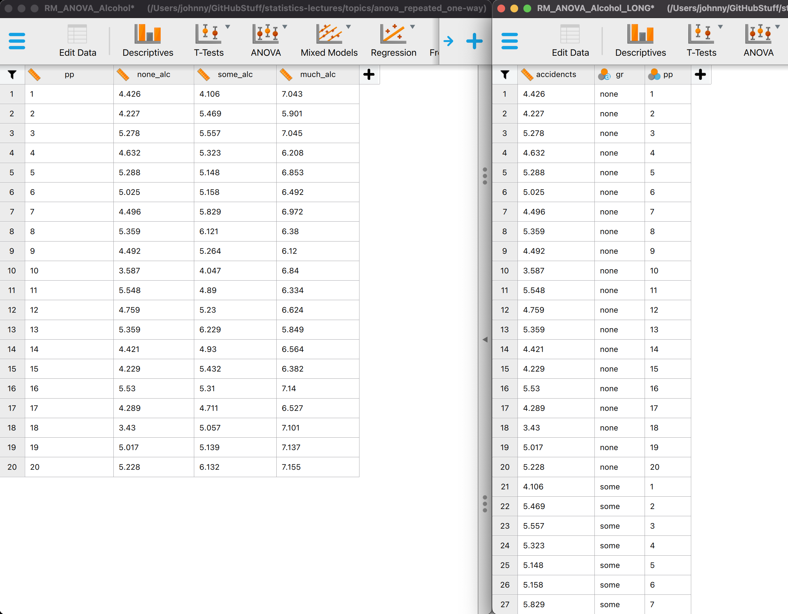

ANOVA
One-way repeated
One-way repeated measures ANOVA
The one-way repeated measures ANOVA analyses the variance of the model while reducing the error by the within person variance.
- 1 dependent/outcome variable
- 1 independent/predictor variable
- 2 or more levels
- All with same subjects
Assumptions
- Continuous dependent variable
- Normally distributed
- Q-Q plots
- Shapiro-Wilk
- Equality of variance of the within-group differences
- Mauchly’s test of Sphericity
- See Field 14.5, table 14.2, Jane Superbrain boxes 14.2 and 14.3
- Always met when having only 2 levels
Formulas
| Variance | Sum of Squares | df | Mean Squares | F-ratio |
|---|---|---|---|---|
| Between | \({SS}_{{between}} = {SS}_{{total}} - {SS}_{{within}}\) | \({DF}_{{total}}-{DF}_{{within}}\) | \(\frac{{SS}_{{between}}}{{DF}_{{between}}}\) | |
| Within | \({SS}_{{within}} = \sum{s_i^2(n_i-1)}\) | \((n_i-1)n\) | \(\frac{{SS}_{{within}}}{{DF}_{{within}}}\) | |
| • Model | \({SS}_{{model}} = \sum{n_k(\bar{X}_k-\bar{X})^2}\) | \(k-1\) | \(\frac{{SS}_{{model}}}{{DF}_{{model}}}\) | \(\frac{{MS}_{{model}}}{{MS}_{{error}}}\) |
| • Error | \({SS}_{{error}} = {SS}_{{within}} - {SS}_{{model}}\) | \((n-1)(k-1)\) | \(\frac{{SS}_{{error}}}{{DF}_{{error}}}\) | |
| Total | \({SS}_{{total}} = s_{grand}^2(N-1)\) | \(N-1\) | \(\frac{{SS}_{{total}}}{{DF}_{{total}}}\) |
Where \(n_i\) is the number of observations per person and \(k\) is the number of conditions. These two are equal for a one-way repeated ANOVA. Furthermore \(n\) is the number of subjects per condition and \(N\) is the total number of data points \(n \times k\).
Example
Measure driving ability in a driving simulator. Test in three consecutive conditions where participants come back to attend the next condition.
- Alcohol none
- Alcohol some
- Alcohol much
The data
Wide vs. long data formats

General flow RM ANOVA
- We look at total variance
- We divide it:
- Within subject variance
- Between subject variance
How much of the within subject variance can we explain by looking at alcohol condition?
Total variance (SS total) - visual

MS within
\({MS}_{within} = \frac{{SS}_{{within}}}{{DF}_{{within}}}\)
\({DF}_{within} = (n_i-1)n\)
Within subject variance (SS within)
\({SS}_{{within}} = \sum{s_i^2(n_i-1)}\)
[1] 11.54771Within subject variance (SS within) - visual

Within subject variance (SS within) - data
MS between
MS model
\({MS}_{model} = \frac{{SS}_{{model}}}{{DF}_{{model}}}\)
\({DF}_{model} = k-1\)
k <- 3
DF_model <- k - 1
DF_model[1] 2SS model
\({SS}_{model} = \sum{n_k(\bar{X}_k-\bar{X})^2}\)
# SS model
n_k1 <- length(none_alc)
n_k2 <- length(some_alc)
n_k3 <- length(much_alc)
# Calculate sums of squares for the model
SS_k1 <- n_k1 * (mean(none_alc) - mean(total))^2
SS_k2 <- n_k2 * (mean(some_alc) - mean(total))^2
SS_k3 <- n_k3 * (mean(much_alc) - mean(total))^2
SS_model <- sum(SS_k1, SS_k2, SS_k3)
SS_model[1] 9.543261Alcohol model SS visual

Full model SS visual

Full model error SS visual

We use full model error to compute F for alcohol

F ratio
\(F = \frac{{MS}_{{model}}}{{MS}_{{error}}}\)
# Calculate mean squares
MS_model <- SS_model / DF_model
MS_error <- SS_error / DF_error
MS_model; MS_error[1] 4.77163[1] 0.250556# Calculate F statistic
fStat <- MS_model / MS_error
fStat[1] 19.04416P-value

Contrast
Planned comparisons
- Exploring differences of theoretical interest
- Higher precision
- Higher power
Post-Hoc
Unplanned comparisons
- Exploring all possible differences
- Adjust p-value for inflated type 1 error
Effect size
General effect size measures
- Amount of explained variance \(R^2\) also called eta squared \(\eta^2\).
- When going for explained variance, partial eta squared (\(\eta_p^2\)) is recommended instead of \(\eta^2\)
- Omega squared \(\omega^2\)
- Great overview of \(\eta^2\) vs \(\omega^2\)
Effect sizes of contrasts or post-hoc comparisons
- Cohen’s \(r\) gives the effect size for a specific comparison
- \(r_{Contrast} = \sqrt{\frac{t^2}{t^2+{df}}}\)
- \(r_{Contrast} = \sqrt{\frac{F(1,{df}_R)}{F(1,{df}_R)+{df}_R}}\)